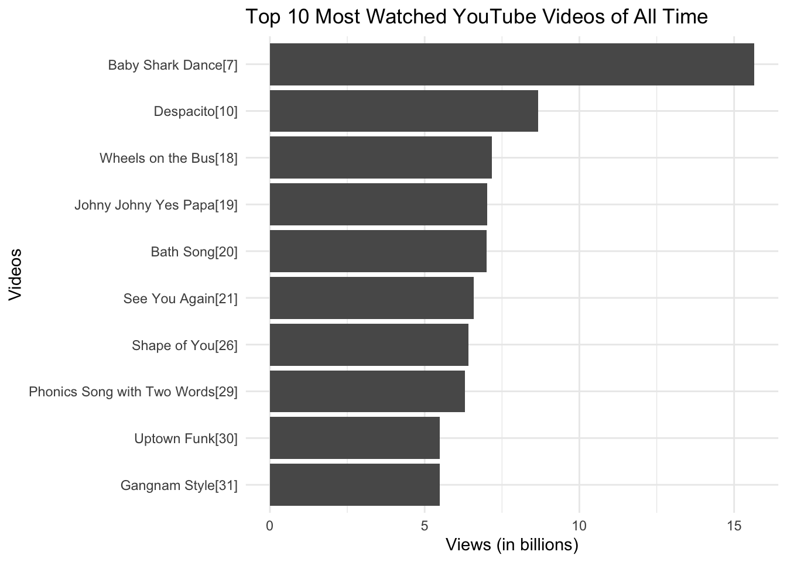
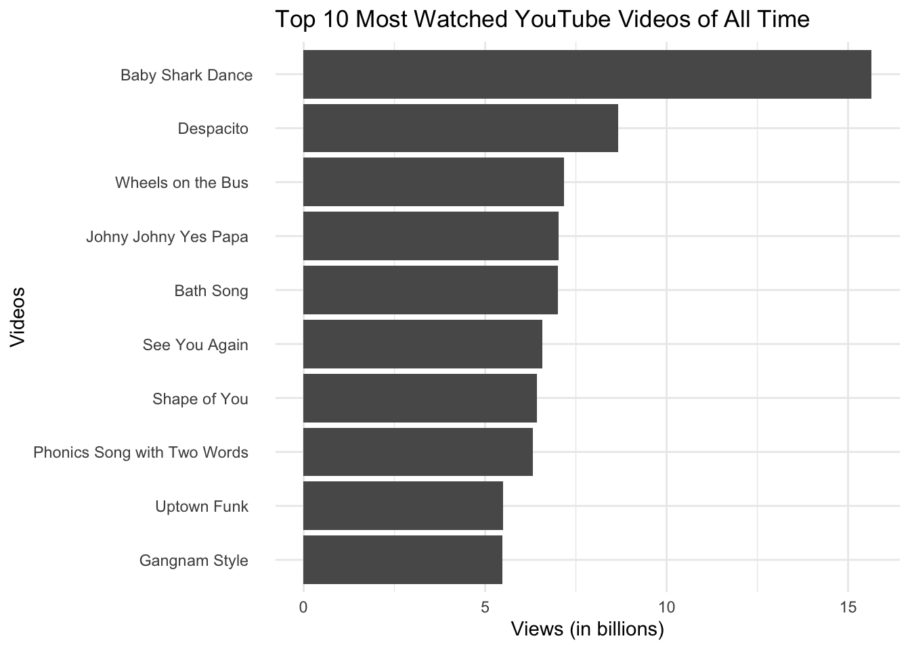

#LOAD PACKAGES
library(tidyverse)Webscraping Tables

Data doesn’t just magically appear on your computer you need to get it from somewhere.
Sometimes we download data files (.csv, .xlsx, etc.) and save them locally. Other times, we use datasets that come bundled with R packages (like the gapminder dataset).
Obtaining Data From The Web
Say you’re interested in renting an apartment in Vermont—or studying the rental market. You might browse Craigslist’s Vermont rental listings.
You could spend hours copying and pasting each listing… or you could write code that extracts the data for you.
When you visit a website, your browser loads the HTML source code, which includes the structure and content of the page—like headings, tables, and links. We can use R to read that code and extract specific content. This is called web scraping.
🛑 Should we be scraping this data?
Before scraping, always ask:
- Is it legal?
- Can your specific use case violate the rules?
- Even if legal, is it ethical?
In the U.S., scraping public data is typically legal if:
- It’s not used for harmful purposes
- It doesn’t interfere with a website’s business
- It excludes personally identifiable information (PII)
Case Law Examples
- eBay vs. Bidder’s Edge (2000): Bots restricted from overloading systems
- Facebook vs. Power Venures (2009): Logging in on others’ behalf violated terms
- Linkedin vs. hiQ Labs (2019): Scraping public profiles ruled permissible
Websites often describe scraping policies in two places:
- Their robots.txt file (e.g., craigslist.org/robots.txt)
- Their Terms of Service (TOS) document
Craigslist explicitly forbids scraping. Wikipedia does not.
Note
Why might Craigslist restrict scraping, while Wikipedia allows it?
How does HTML work?
HTML (HyperText Markup Language) is the language used to create web pages. HTML uses tags (like <table>, <tr>, <td>) to define page elements. If we understand this structure, we can write code that extracts tables and other elements from the page.
Tip
Typically, an HTML element is defined by a start tag, some content, and an end tag
<tagname> ...some content here... </tagname>
For example:
<html>
<head>
<title>Page Title</title>
</head>
<body>
<h1>My First Heading</h1>
<p>My first paragraph.</p>
</body>
</html>There are many, many different possible tag elements. In this class, it’s not important that you know the specifics of what each element is. It’s useful for you to understand the basic structure.
HTML Tables
An HTML table is used to represent data in a structured way
<table>Defines a table<th>Defines a header cell in a table<tr>Defines a row in a table<td>Defines a cell in a table
Here is the HTML code:
<table>
<tr>
<th>Name</th>
<th>Birth Year</th>
<th>Country</th>
</tr>
<tr>
<td>Harry Styles</td>
<td>Feb 1, 1994</td>
<td>Britain</td>
</tr>
<tr>
<td>Taylor Swift</td>
<td>Dec 13, 1989</td>
<td>USA</td>
</tr>
<tr>
<td>Justin Bieber</td>
<td>Mar 1, 1994</td>
<td>Canada</td>
</tr>
</table>Here is how the HTML displays in a web browser:
| Name | Birth Year | Country |
|---|---|---|
| Harry Styles | Feb 1, 1994 | Britain |
| Taylor Swift | Dec 13, 1989 | USA |
| Justin Bieber | Mar 1, 1994 | Canada |
Today’s class will focus on scraping data from HTML tables!
HTML class
The class attribute can be added to any HTML element. Often it is used to help customize the styling of the element (among other things).
<h2 class="city">Middlebury</h2>
<p class="city">Middlebury is a town in Vermont</p>This can be particularly useful in web scraping – we can ask to scrape particular elements, particular classes, or both!
Web Scraping using rvest
We need the package rvest to help us with this.
library(rvest)Viewing Raw HTML from a website
You can inspect the source code of any webpage by using a web browser like Firefox or Chrome.
- On Firefox, navigate to the “Tools” menu item in the top menu and click on “Web Developer/Page Source”. You can also use the shortcut
Command + U - On Chrome, navigate to the top menu item “View” and click on “Developer/View Source.” You can also use the keyboard shortcut
Option-Command-U. It also can be useful to use the SelectorGadget Extension.
Webscraping Tables from Wikipedia
Check out the information on the (List of the Most Viewed YouTube Videos on Wikipedia)[https://en.wikipedia.org/wiki/List_of_most-viewed_YouTube_videos]. Suppose we want to scrape this data to use in R.
read_htmlscrapes the raw html from the webpage as texthtml_element(andhtml_elements) selects particular elements from the HTML codehtml_tableformats a scraped html table as a tibble (R table)
youtube_videos <- read_html("https://en.wikipedia.org/wiki/List_of_most-viewed_YouTube_videos") %>%
html_element(".wikitable") %>%
html_table()
youtube_videos# A tibble: 31 × 6
`Video name` Uploader `Views (billions)` Date Notes ``
<chr> <chr> <chr> <chr> <chr> <chr>
1 Baby Shark Dance[7] Pinkfon… 15.65 June… "[A]" <NA>
2 Despacito[10] Luis Fo… 8.66 Janu… "[B]" <NA>
3 Wheels on the Bus[18] Cocomel… 7.17 May … "" <NA>
4 Johny Johny Yes Papa[19] LooLoo … 7.02 Octo… "" <NA>
5 Bath Song[20] Cocomel… 7.01 May … "" <NA>
6 See You Again[21] Wiz Kha… 6.58 Apri… "[C]" <NA>
7 Shape of You[26] Ed Shee… 6.42 Janu… "[D]" <NA>
8 Phonics Song with Two Words[29] ChuChu … 6.31 Marc… "" <NA>
9 Uptown Funk[30] Mark Ro… 5.49 Nove… "" <NA>
10 Gangnam Style[31] Psy 5.48 July… "[E]" <NA>
# ℹ 21 more rowsWe could have used
html_element("table")If we did this, it would have pulled the first<table>from the page.We could have used
html_elements("table")If we did this, it would have pulled all the<table>elements from the page.If you want a specific table that isn’t the first table, scrape all the tables and apply
html_table(). Then take that new object of the tables and add[[n]]to get the \(n^{th}\) table. For example to call the \(2^{nd}\) table,
tables <- html %>%
html_elements("table") %>%
html_table()
tables[[2]]- In this case, we used
html_elements(".wikitable")I choose to use this because the<table>was also defined with a uniqueclass:<table class="wikitable sortable">
Warning
Note that if we are using html_element to call a class, it is important to add a “.” before the class element name. You do not need to do this is you are calling an HTML element (like “table”)
Cleaning up with janitor
Web scraping doesn’t always format perfectly. Let’s clean it up!
library(janitor)
Clean up the names of the header:
youtube_videos <- clean_names(youtube_videos)Format the views as a number using as.numeric:
youtube_videos <- youtube_videos %>%
mutate(views_billions = as.numeric(views_billions))What are the top 10 most viewed YouTube Videos?
top10 <- youtube_videos %>%
arrange(desc(views_billions)) %>%
slice(1:10)
top10# A tibble: 10 × 6
video_name uploader views_billions date notes x
<chr> <chr> <dbl> <chr> <chr> <chr>
1 Baby Shark Dance[7] Pinkfong Ba… 15.6 June… "[A]" <NA>
2 Despacito[10] Luis Fonsi 8.66 Janu… "[B]" <NA>
3 Wheels on the Bus[18] Cocomelon -… 7.17 May … "" <NA>
4 Johny Johny Yes Papa[19] LooLoo Kids… 7.02 Octo… "" <NA>
5 Bath Song[20] Cocomelon -… 7.01 May … "" <NA>
6 See You Again[21] Wiz Khalifa 6.58 Apri… "[C]" <NA>
7 Shape of You[26] Ed Sheeran 6.42 Janu… "[D]" <NA>
8 Phonics Song with Two Words[29] ChuChu TV N… 6.31 Marc… "" <NA>
9 Uptown Funk[30] Mark Ronson 5.49 Nove… "" <NA>
10 Gangnam Style[31] Psy 5.48 July… "[E]" <NA> Once we have this data, we can make cool plots!
top10 %>%
ggplot( aes(x=views_billions, y=reorder(video_name, views_billions))) +
geom_bar(stat="identity") +
xlab("Views (in billions)") +
ylab("Videos") +
ggtitle("Top 10 Most Watched YouTube Videos of All Time") +
theme_minimal()
In this case, the list of the names is still not displaying very neatly. For example, rather than "Baby Shark Dance"[6] I might want it to just say Baby Shark Dance.
We can use the stringr package to remove symbols and numbers from the video names. We will be talking more about stringr later this semester and it’s not something I expect you to be able to do at this point in the semester.
library(stringr)
top10 %>%
mutate(video_name=str_replace_all(video_name, "[^[:alpha:]]", " ")) %>%
ggplot(aes(x=views_billions, y=reorder(video_name, views_billions))) +
geom_bar(stat="identity") +
xlab("Views (in billions)") +
ylab("Videos") +
ggtitle("Top 10 Most Watched YouTube Videos of All Time") +
theme_minimal()